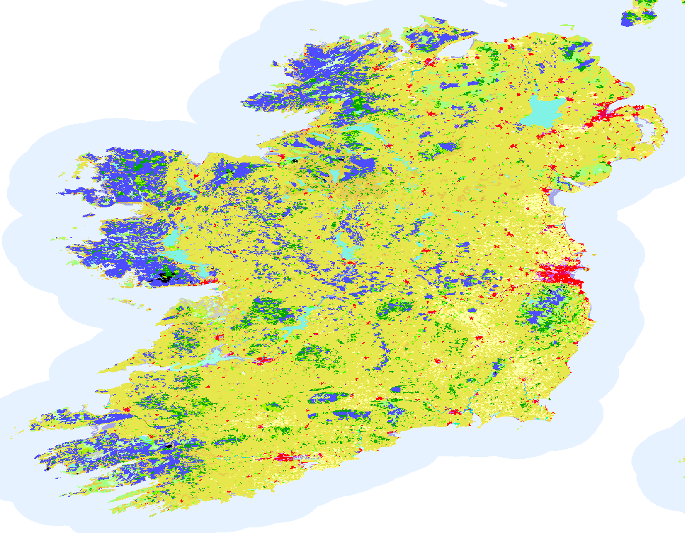
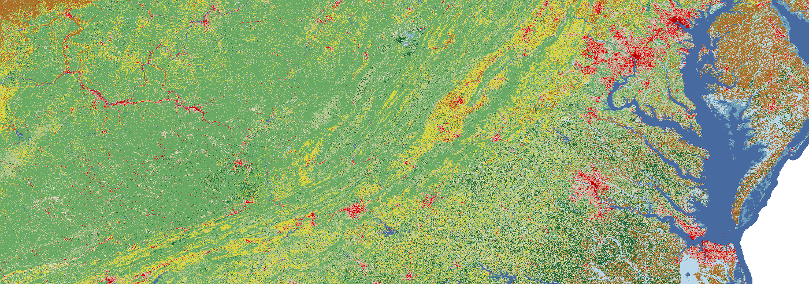
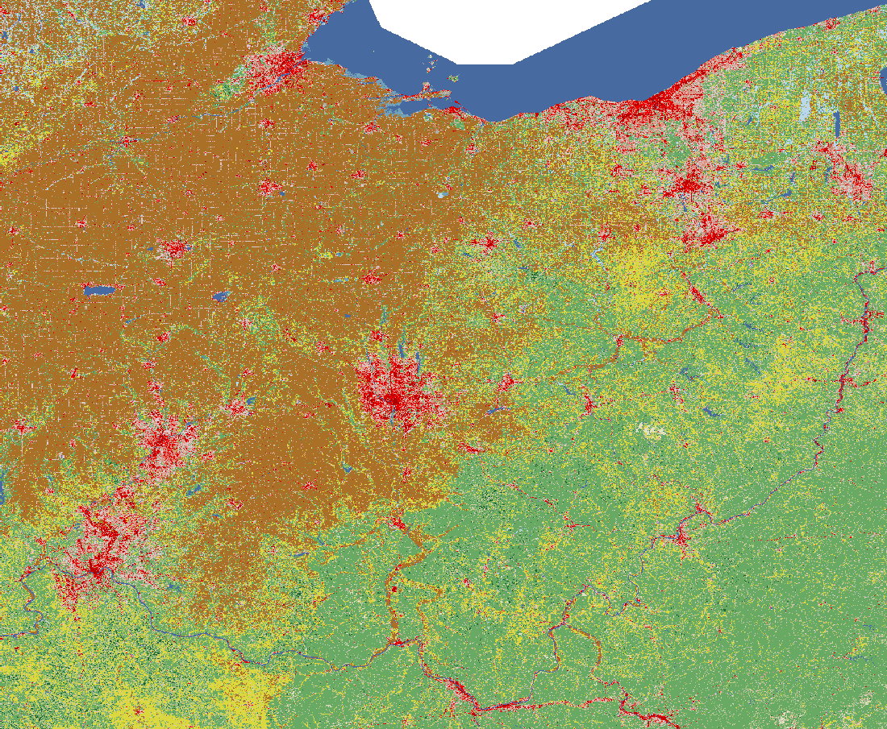

03 · Regeneration
Global land cover by dominant type, over the world's peatlands — the degraded ground this project sets out to regenerate.
Dominant land-cover type by country, with global peatlands over the top. Click a country for its land type; toggle layers at right.
Layers
Sources: Forest & agricultural land (% of land) — World Bank / FAO. Peatlands — Global Peatlands, GFW/WRI. Base © OpenStreetMap contributors, © CARTO.
CORINE 2018. Peat bogs (violet) dominate the western Atlantic seaboard and the midlands — the degraded ground this project regenerates. Pasture in yellow, forest green, Dublin and towns in red.

Source: CORINE Land Cover 2018 — Copernicus Land Monitoring Service / EEA (100 m).
NLCD 2021. The red developed cluster in the north-east is "Data Center Alley" (Loudoun / Northern Virginia); Richmond and Norfolk also read as developed. Forest in green, cropland tan, the Chesapeake Bay in blue.

Source: NLCD 2021 — USGS / MRLC (30 m).
NLCD 2021. Columbus and the New Albany data-centre cluster show as developed (red) amid Ohio's cropland (tan) and forest (green) — a landscape being rewired for data.

Source: NLCD 2021 — USGS / MRLC (30 m).